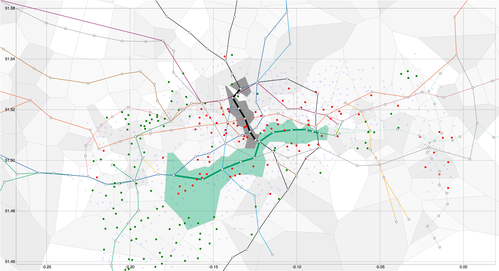
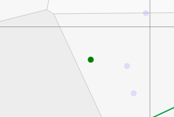

COMP3001
Technology Management and Professional Issues
Click here to see our gantt chart
Analytics Application and Data Visualsiations
- We acquired and analysed multiple data sources
- This big data is analysed to detect network anomalies
- We built data visualisations to show bicycles availability
- We show the effect engineering works has on availability
Final Product
This image shows how TFL could use our data visualisations to map tube closures on the District Line and Northern Line.

Team 5
- Jonny Manfield
- Nicola Greco(EL)
- Marcin Cuber(STL)
- Ran Gutin
- Edward James
- Toshiyuki Nishino(NII)
- Navid Hallajian(STL)
- Mohan Dai
- Ragavan Guneshalingham
- Michael Detmold(STL)
- Richard Isaac
- Christodoulos Demetriades
- Keqin Feng
Key: (STL) - Sub-team leader, (NII) - National Institute of Informatics
Demo
Development
Initial visualisation
tubeMaps Open source Library with 100 stars!
Visualisation Key
Green = 2 bikes away from empty

Red = 2 bikes away from full
Global network visualisation to show empty or full docking stations
Initial Voronoi visualisation
Voronoi diagram of London